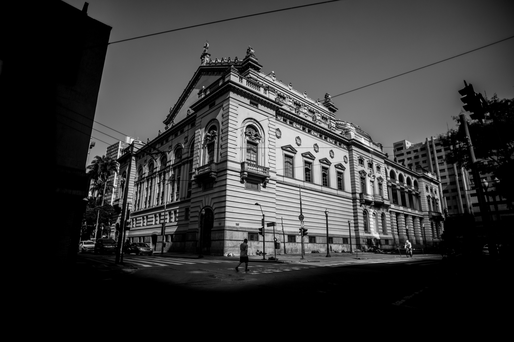
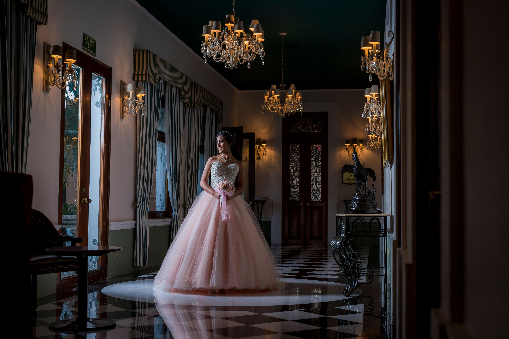
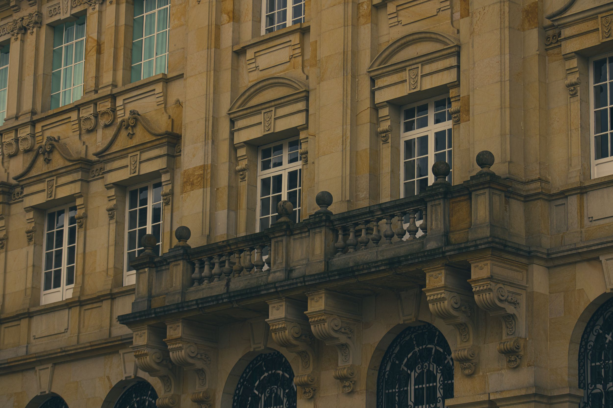
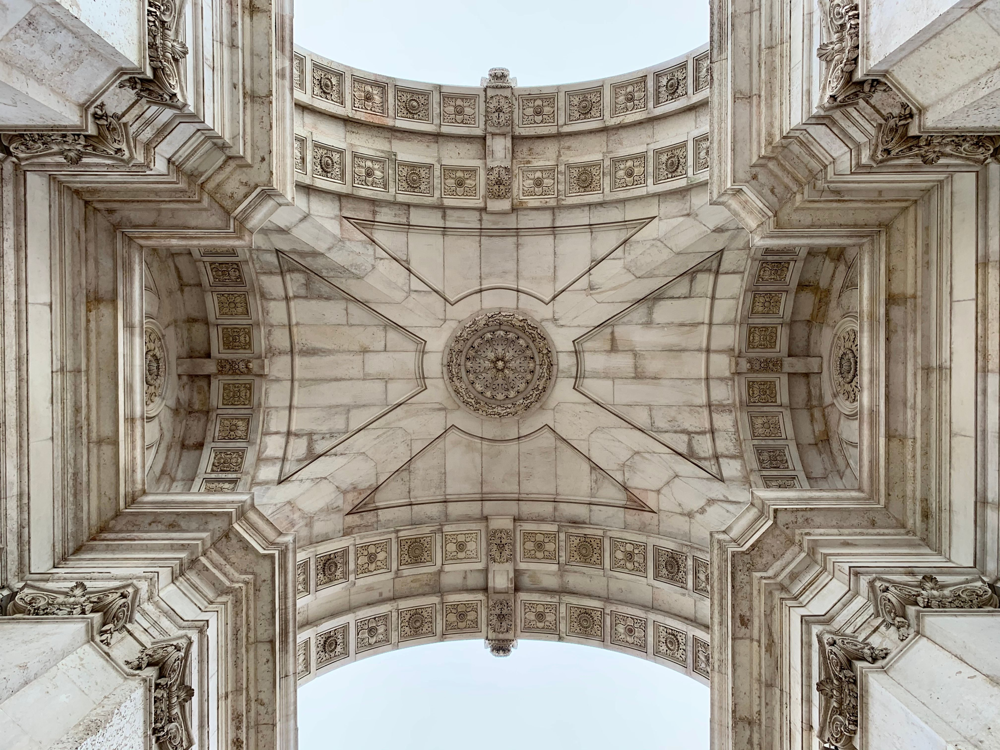
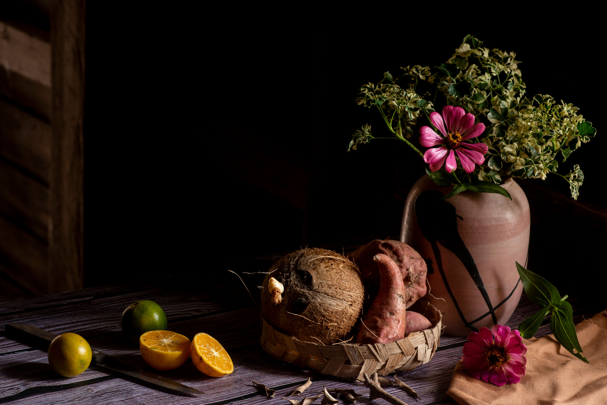

Trabalhos selecionados
Uma seleção de ensaios recentes, organizados por categoria.
Retrato
Editorial "Silêncio"
Série de retratos em luz baixa, explorando contraste e sombra como elementos narrativos. Produzida ao longo de três sessões em estúdio, com direção de arte minimalista.


Arquitetura
Concreto e Vão
Ensaio sobre espaços urbanos brutalistas: linhas retas, luz dura ao meio-dia, texturas de concreto aparente.


Still Life
Objetos em Repouso
Composições de produto e objetos cotidianos, fotografados com luz direcional única — sem retoque de sombra, valorizando a textura real.
